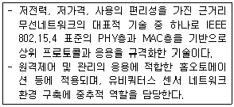
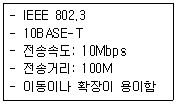

네트워크관리사-2급 (2010-10-12 기출문제)
1과목: TCP/IP
1. 도메인 이름을 알고 있는 호스트의 IP Address를 알아내는 데 사용되는 서비스로, 일반적으로 ISP(Internet Service Provider)에서 IP를 할당받을 때 같이 신청하는 것은?
- Inverse Domain
- Generic Domain
- Country Domain
- Administrative Domain
(정답률: 62%)

2. 아래에서 설명하는 기술의 명칭은?

- WLAN
- HomeRF
- ZigBee
- IrDA
(정답률: 73%)
3. C Class의 IP Address에 대한 설명으로 옳지 않은 것은?
- Network ID는 “192.0.0 ~ 223.255.255”이고, Host ID는 “1 ~ 254”이다.
- IP Address가 203.240.155.32 인 경우, Network ID는 203.240, Host ID는 155.32가 된다.
- 통신망의 관리자는 Host ID "0", "255"를 제외하고, 254개의 호스트를 구성할 수 있다.
- Host ID가 255일 때는 메시지가 네트워크 전체로 브로드 캐스트 된다.
(정답률: 77%)
4. OSI 7 Layer 중에서 IEEE 802.11에서 다루는 계층 범위로 올바른 것은?
- 물리 계층
- 물리 계층, 데이터링크 계층
- 물리 계층, 데이터링크 계층, 네트워크 계층
- 물리 계층, 데이터링크 계층, 네트워크 계층, 전송 계층
(정답률: 59%)
5. Link State 알고리즘을 이용해 서로에게 자신의 현재 상태를 알려주며 네트워크 내 통신을 위해 사용하는 프로토콜은?
- OSPF
- IDRP
- EGP
- BGP
(정답률: 72%)
6. IP Address를 하드웨어 주소로 대응시키기 위해 사용되는 프로토콜은?
- ARP
- RARP
- ICMP
- IGMP
(정답률: 86%)
7. ICMP의 Message Type 필드 번호와 유형이 잘못 연결된 것은?
- 0 - Echo Reply
- 8 - Echo Request
- 12 - Timestamp Request
- 17 - Address Mask Request
(정답률: 55%)
8. Bluetooth 기술에 대한 설명으로 올바른 것은?
- 주파수 호핑 속도가 빠른 DSSS(Direct Sequence Spread Spectrum)을 사용하여 간섭에 강하다.
- 1대의 Master가 7대까지의 Slave를 연결하는 피코넷(Piconet)으로 구성되어 있다.
- 주요 통신방식은 FDD(Frequency Division Duplex) 방식을 사용한다.
- 부품의 전력 소모량이 크고, 그 부피도 큰 편이므로 소형 모바일 기기에 내장시키기에는 적합하지 않다.
(정답률: 66%)
9. TCP/IP 프로토콜 중 응용 계층에서 동작하지 않는 것은?
- SMTP
- Telnet
- FTP
- IGMP
(정답률: 70%)
10. USB에 대한 설명으로 옳지 않은 것은?
- USB 1.1 규격은 Low Speed(1.5Mbps)와 Full Speed(12Mbps)를 지원하고 있다.
- USB 1.1 규격의 Host Controller에서 USB 2.0 장치 연결이 가능하다.
- 모든 USB 1.1 규격 장치들은 USB 2.0 규격 장치들과 같이 사용할 수 있으며, 2.0 규격으로 동작한다.
- USB 장치는 PC와 Master - Slave 관계를 갖는다.
(정답률: 69%)
11. Telnet을 이용하여 상대방 컴퓨터에 접속을 시도하려고 한다. 상대방 컴퓨터에게 일정한 데이터를 보내 상대방 컴퓨터의 정상 동작 여부를 확인하고 싶을 때 사용하는 명령어는?
- ping
- nslookup
- netstat
- finger
(정답률: 87%)
12. BGP에 대한 설명으로 옳지 않은 것은?
- 다른 AS상에 있는 라우터들 사이의 통신 프로토콜이다.
- UDP를 사용한다.
- Distance-Vector Protocol이다.
- Exterior Gateway Protocol이다.
(정답률: 55%)
13. rlogin과 같은 초기 유닉스 계열 명령어에 보안 기능을 보완하여 원격지에 있는 호스트를 보다 안전하게 접속할 수 있는 응용 계층 프로토콜은?
- SSH
- RSH
- RIP
- CMIP
(정답률: 91%)
14. UDP 세션을 이용하여 네트워크를 관리하는데 사용되는 프로토콜은?
- CMIP
- SMTP
- SNMP
- TFTP
(정답률: 74%)
15. 하나의 서버는 서로 다른 서비스를 제공하고 있으며, 이 서비스는 포트라고 불리는 서로 다른 문을 통하여 제공된다. 다음은 서버가 일반적으로 사용하는 포트 번호를 나타내고 있다. 서비스에 따른 포트 번호가 잘못 짝지어진 것은?
- FTP - 11
- SSH - 22
- Telnet - 23
- SMTP - 25
(정답률: 89%)
16. DNS에 대한 설명 중 옳지 않은 것은?
- 다른 호스트에 접근하고자 할 때 기억하기 어려운 IP Address 대신에 좀 더 이해하기 쉬운 계층적인 호스트 이름을 사용할 수 있도록 하는 기반 서비스이자 프로토콜이다.
- 호스트 이름에 대한 분산 데이터베이스이다.
- 호스트 이름은 단순한 나열이 아니라 하나의 논리적인 구조를 형성하고 있다는 것을 말한다. 이들 호스트들은 하나의 도메인으로 그룹화 되어 있고, 내부에 다른 도메인을 포함할 수 있다.
- 호스트 이름은 영문자와 숫자 그리고 "@", "#"과 같은 특수 문자로 구성이 된다.
(정답률: 85%)
17. TCP와 UDP의 차이점을 설명한 것 중 옳지 않은 것은?
- TCP는 전 이중방식 스트림 중심의 연결형 프로토콜이고, UDP는 비 연결형 프로토콜이다.
- TCP는 전달된 패킷에 대한 수신측의 인증이 필요하지만 UDP는 그렇지 않다.
- TCP는 보통 중요한 사용자 데이터 전송에, UDP는 시스템간의 메시지 전달에 주로 사용된다.
- UDP는 TCP에 비해 오버헤드가 크다.
(정답률: 78%)
2과목: 네트워크 일반
18. 오류 검출 방법 중 단일비트 수정이 가능한 중복 검사 방법은?
- 해밍코드 중복검사
- 순환 중복검사
- 세로 중복검사
- 체크섬 중복검사
(정답률: 77%)
19. 멀티 포인트 방식에서 중앙 컴퓨터가 주변의 터미널로 데이터를 전송하고자 하는 경우, 수신측 터미널의 상태를 확인하는 절차는?
- Contention
- Polling
- Selection
- Routing
(정답률: 51%)
20. 망 연동 장치 중 데이터링크 계층에서 동작하는 것은?
- Bridge
- Router
- Repeater
- Gateway
(정답률: 67%)
21. 가상 회선방식의 특징으로 올바른 것은?
- 연결형 서비스를 제공한다.
- 비 연결형 서비스를 제공한다.
- 연결설정 작업 시, 시간 지연이 없다.
- 가장 대표적인 방식이 인터넷이다.
(정답률: 47%)
22. 2.4GHz 대역으로 11Mbps 속도를 제공하며, 주로 지하철이나 학교 등에서 무선 LAN 서비스를 제공하는 데 사용되는 표준에 해당되는 것은?
- IEEE 802.11a
- IEEE 802.11b
- IEEE 802.11f
- IEEE 802.11g
(정답률: 68%)
23. OSI 7 Layer 중 물리적 링크 간의 신뢰성 있는 정보 전송을 제공하며 동기화, 에러 제어, 흐름 제어로서 데이터의 블록을 전송하는 기능을 가진 계층은?
- 물리 계층
- 데이터링크 계층
- 트랜스포트 계층
- 네트워크 계층
(정답률: 69%)
24. IEEE에서 표준화된 저속 Ethernet 방식은 전송매체와 전송속도에 따라 xBase-y 또는 xBroad-y형태의 이름을 갖는다. 여기서 x와 y의 의미로 올바른 것은?
- x : 전송속도, y : 비트 에러율
- x : 전송속도, y : 리피터 없이 전송가능 최대거리
- x : 비트 에러율, y : 전송속도
- x : 리피터 없이 전송가능 최대거리, y : 전송속도
(정답률: 72%)
25. 여러 개의 물리적인 LAN 세그먼트간의 연동(브리지 레벨)을 수행하는 LAN 스위치에 DTE들을 논리적으로 구분되는 가상 그룹으로 분리할 수 있는 기능을 부여한 LAN은?
- Fast Ethernet
- ATM LAN
- VLAN
- Gigabit Ethernet
(정답률: 78%)
26. LAN에서 사용하는 CSMA/CD 프로토콜에 대한 설명으로 옳지 않은 것은?
- 무선랜에 사용되는 방식으로, ACK 프레임을 사용하여 전송하기 전에 충돌이 일어나지 않도록 한 후 전송을 시작한다.
- 송신을 원하는 호스트는 송신 전에 다른 호스트가 채널을 사용하는지 조사한다.
- 전송하는 동안 계속적으로 채널을 감시하여 충돌이 발생하는지를 조사한다.
- 충돌이 발생하게 되면, 충돌한 데이터들은 버려지고 데이터를 전송한 장치들에게 재전송을 요구한다.
(정답률: 62%)
27. AP(Access Point) 중심으로 여러 대의 노드가 연결되어 하나의 무선 네트워크 단위로 형성하는 무선 LAN 방식은?
- Infrastructure
- Ad-Hoc
- Smart
- PCMCIA
(정답률: 54%)
3과목: NOS
28. DNS Record Type 중 Domain Name을 IP Address로 바꿔주는 레코드는?
- SOA
- NS
- A
- CNAME
(정답률: 60%)
29. Linux 시스템에서 기존에 설정된 crontab을 삭제하려고 할 때 올바른 명령어는?
- crontab -u
- crontab -e
- crontab -l
- crontab -r
(정답률: 77%)
30. Windows 2000 Server에서 NetBIOS 이름을 IP Address로 풀이하는 역할을 하는 서비스는?
- DNS
- WINS
- DHCP
- FTP
(정답률: 60%)
31. Linux 시스템에서 tar로 묶으면서 동시에 bzip2로 압축하는 명령어 형식은?
- tar -xjvf
- tar -cvfz
- tar -cjvf
- tar -xvfz
(정답률: 50%)
32. Windows 2000 Server에서 DHCP 범위 (Dynamic Host Configuration Protocol Scope) 혹은 주소 풀(Address Pool)을 만들 때 주의할 점이 아닌 것은?
- 모든 DHCP 서버는 최소한 하나의 DHCP 범위를 반드시 가져야 한다.
- DHCP 주소 범위에서 정적으로 할당되어야하는 주소가 있다면 반드시 해당 주소를 제외해야 한다.
- 네트워크에 여러 DHCP 서버를 운영할 경우에는 DHCP 범위가 겹치지 않아야 한다.
- 하나의 서브넷에는 여러 개의 DHCP 범위가 사용될 수 있다.
(정답률: 55%)
33. Windows 2000 Server의 관리도구 중 로컬 보안 설정을 통해 설정 가능한 보안정책이 아닌 것은?
- 계정의 최소 암호 길이의 설정
- 계정의 최소 암호 기간의 설정
- 잘못된 암호를 입력하여 로그온 실패 시 계정이 잠기는 기간 설정
- User 및 Group들의 로컬 파일 검색 허용 설정
(정답률: 67%)
34. 관리자가 계정을 만들지 않더라도 자동으로 Windows 2000 Server 설치와 함께 만들어지는 계정은?
- 글로벌 사용자 계정
- 내장(BUILT-IN)된 계정
- 외부 사용자 계정
- 도메인 사용자 계정
(정답률: 72%)
35. Windows 2000 Server에서 백업의 종류와 설명이 바르게 연결된 것은?
- 보통 백업 : 수행하는 날짜에 수정된 모든 파일을 복사한다.
- 매일 백업 : 선택된 모든 파일을 복사하고 보관 속성을 해제하여 각 파일이 백업 된 것으로 표시한다.
- 차등 백업 : 보통 백업이나 증분 백업을 수행하기 전에 만들어 졌거나 변경된 파일만 백업한다.
- 복사 백업 : 선택된 모든 파일을 복사하지만 보관 속성을 해제하지 않으므로 백업된 것으로 표시되지 않는다.
(정답률: 57%)
36. Windows 2000 Server에서 이용할 수 있는 TCP/IP 유틸리티가 아닌 것은?
- ping
- ifconfig
- hostname
- tracert
(정답률: 66%)
37. Windows 2000 Server에서 사용되는 가상 메모리에 대한 설명으로 옳지 않은 것은?
- 하드디스크의 일부를 메모리처럼 사용하는 방법이다.
- 서버의 성능에 영향을 미친다.
- 각 드라이브 별로 필요한 크기만큼 가상메모리를 설정할 수 있다.
- 가상 메모리로 사용할 드라이브는, 가상 메모리의 크기만큼 파티션을 별도로 생성하여 관리해야 한다.
(정답률: 63%)
38. Windows 2000 Server의 그룹 중 파일이나 폴더의 소유권을 변경할 수 있는 것은?
- Users
- Replicator
- Administrators
- Backup Operators
(정답률: 88%)
39. Windows 2000 Server에서 secedit 명령 구문과 설명으로 옳지 않은 것은?
- secedit /analyze : 데이터베이스의 기준선 설정과 비교하여 컴퓨터의 보안 설정을 분석할 수 있다.
- secedit /export : 데이터베이스에 저장된 보안 설정을 내보낼 수 있다.
- secedit /delete : 현재 진행 중인 보안설정을 삭제한다.
- secedit /configure : 데이터베이스에 저장된 설정을 적용할 로컬 컴퓨터 보안을 구성한다.
(정답률: 45%)
40. Windows 2000 Server의 동적 디스크는 복수의 디스크 빈 공간으로부터 만들어진 저장 단위인 볼륨(Volume)으로 만들어진다. 볼륨에 대한 설명 중 올바른 것은?
- 스트라이프 볼륨 : 여러 디스크를 하나의 볼륨으로 지정하며, 저장 시 하나의 디스크를 다 사용할 때까지 다른 디스크를 이용하지 않는다.
- 스팬 볼륨 : 여러 디스크를 하나의 볼륨으로 사용하며, 각각의 디스크를 동시에 사용한다.
- RAID-5 볼륨 : 최고의 성능을 기대할 수 있지만, 고장 대비 능력은 전혀 없다.
- 미러 볼륨 : 같은 내용을 갖는 단순 볼륨을 동시에 두개 만드는 형태이며, 하나의 디스크에 오류가 발생해도 복구가 가능하다.
(정답률: 77%)
41. 시스템 성능 모니터에서 체크되는 요소로 옳지 않은 것은?
- 이벤트(Event)
- 객체(Object)
- 카운터(Counter)
- 인스턴스(Instance)
(정답률: 45%)
42. Windows 2000 Server 설치 도중에 파티션을 어떤 File System으로 포맷할 것인지를 결정해야 한다. Windows 2000 Server에서 기본적으로 지원하지 않는 파티션은?
- NTFS
- FAT
- NFS
- FAT32
(정답률: 71%)
43. Windows 2000 Server에서 파티션을 FAT에서 NTFS로 변환하는 명령은?
- Convert C: /FS:FAT
- Convert C: /NTFS:FAT
- Convert C: /FAT:NTFS
- Convert C: /FS:NTFS
(정답률: 57%)
44. Windows 2000 Server에서 여러 사용자 계정을 만들 경우 홈 디렉터리로 지정할 최종 경로에서 사용자 이름대신 사용하는 시스템 변수는?
- %username%
- %userdomain%
- %homeshare%
- %homedrive%
(정답률: 72%)
45. Windows 2000 Server에서 시스템 인터페이스 정보를 출력하면서 송수신 패킷 수 및 오류 수, 충돌 횟수, 현재 출력 큐에 대기 중인 패킷 등에 관한 정보를 제공하는 것은?
- ARP
- Netstat
- Filter
- ICMP
(정답률: 65%)
4과목: 네트워크 운용기기
46. 물리계층의 연동 장비로 신호를 재생하는데 사용되는 것은?
- Repeater
- Brouter
- Router
- Gateway
(정답률: 86%)
47. Dummy Hub에 대한 설명 중 옳지 않은 것은?
- 신호를 재생 및 증폭한다.
- LAN이 보유한 대역폭을 연결된 PC의 수만큼 나누어서 제공한다.
- PC의 수가 증가하여도 특정 전송 속도를 보장한다.
- 네트워크에 연결된 각 PC를 트리 구조로 연결하는데 사용된다.
(정답률: 66%)
48. 광섬유에 대한 설명으로 옳지 않은 것은?
- 매우 가느다란 유리 섬유를 이용해 정보를 보내는 것으로, 넓은 대역폭을 가지며 전송 속도가 매우 빠르고 오류가 적다.
- 전기적인 간섭을 받지 않는다.
- 동축케이블보다 무게가 적고, 직경이 작다.
- 광신호를 변복조하기 위한 별도의 장비가 필요 없으므로, 유지 보수에 드는 비용이 동축케이블 보다 적다.
(정답률: 76%)
49. 아래에서 설명하는 전송 매체에 해당하는 것은?

- Thick-Net
- Thin-Net
- UTP Cable
- Fiber Optic
(정답률: 70%)
50. Cisco 2500의 Privileged Mode에 대한 설명으로 옳지 않은 것은?
- Configuration File의 초기 설정이 이루어지지 않았을 경우에는 Privileged Mode 암호를 입력할 필요가 없다.
- User Mode에서 Privileged Mode로 이동하려면 Disable을 실행한다.
- 라우터의 환경을 조정한다.
- Privileged Mode의 Prompt가 ‘#’으로 나타난다.
(정답률: 57%)